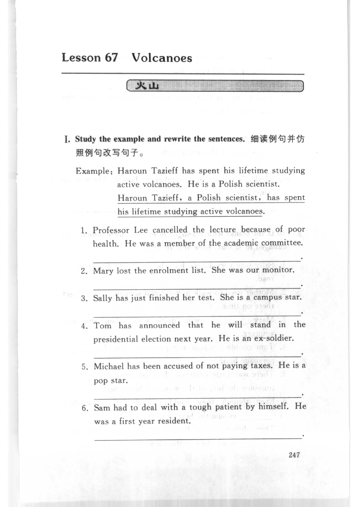
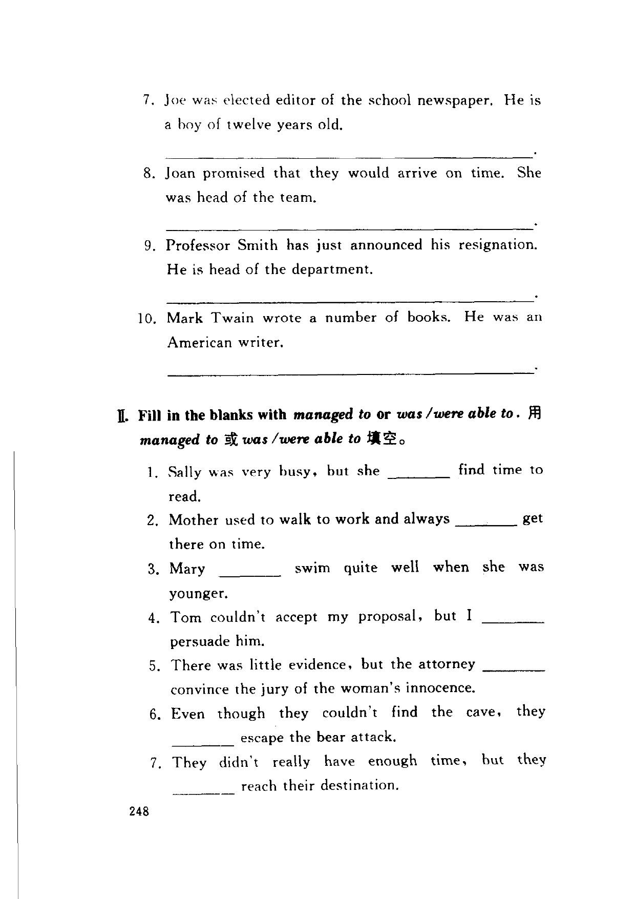
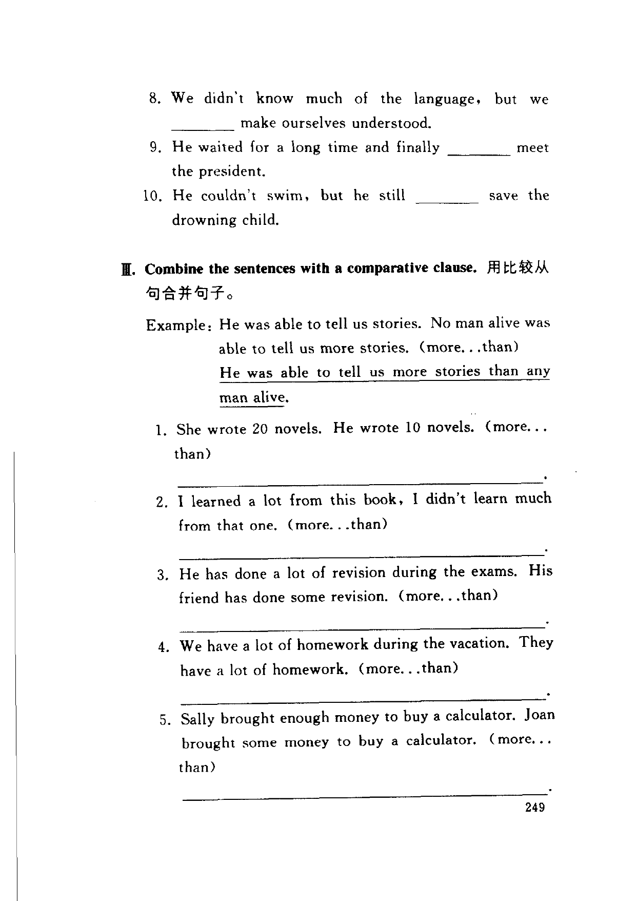
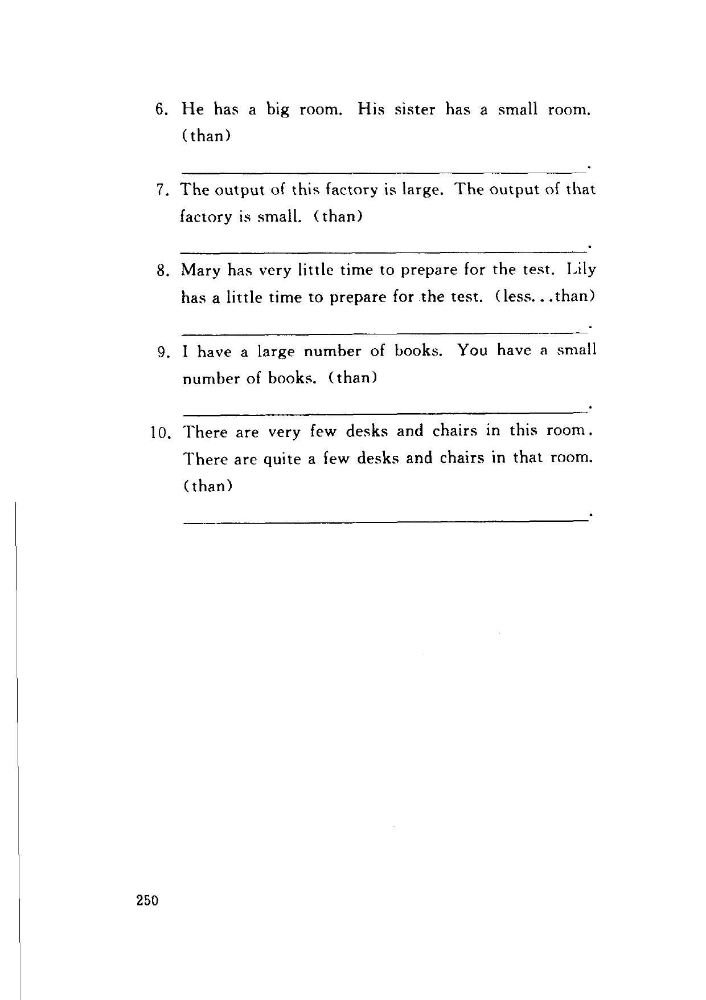

Grammar exercises · 语法练习
I. Study the example and rewrite the sentences.
细读例句并仿照例句改写句子。
Example: Haroun Tazieff has spent his lifetime studying active volcanoes. He is a Polish scientist.
Haroun Tazieff, a Polish scientist, has spent his lifetime studying active volcanoes.
-
I. Study the example and rewrite — Professor Lee cancelled the lecture because of poor health. He was a member of the academic committee.
-
I. Study the example and rewrite — Mary lost the enrolment list. She was our monitor.
-
I. Study the example and rewrite — Sally has just finished her test. She is a campus star.
-
I. Study the example and rewrite — Tom has announced that he will stand in the presidential election next year. He is an ex-soldier.
-
I. Study the example and rewrite — Michael has been accused of not paying taxes. He is a pop star.
-
I. Study the example and rewrite — Sam had to deal with a tough patient by himself. He was a first year resident.
-
I. Study the example and rewrite — Joe was elected editor of the school newspaper. He is a boy of twelve years old.
-
I. Study the example and rewrite — Joan promised that they would arrive on time. She was head of the team.
-
I. Study the example and rewrite — Professor Smith has just announced his resignation. He is head of the department.
-
I. Study the example and rewrite — Mark Twain wrote a number of books. He was an American writer.
II. Fill in the blanks with managed to or was /were able to.
用 managed to 或 was /were able to 填空。
-
II. managed to / was /were able to — Sally was very busy, but she
1.find time to read. -
II. managed to / was /were able to — Mother used to walk to work and always
2.get there on time. -
II. managed to / was /were able to — Mary
3.swim quite well when she was younger. -
II. managed to / was /were able to — Tom couldn't accept my proposal, but I
4.persuade him. -
II. managed to / was /were able to — There was little evidence, but the attorney
5.convince the jury of the woman's innocence. -
II. managed to / was /were able to — Even though they couldn't find the cave, they
6.escape the bear attack. -
II. managed to / was /were able to — They didn't really have enough time, but they
7.reach their destination. -
II. managed to / was /were able to — We didn't know much of the language, but we
8.make ourselves understood. -
II. managed to / was /were able to — He waited for a long time and finally
9.meet the president. -
II. managed to / was /were able to — He couldn't swim, but he still
10.save the drowning child.
III. Combine the sentences with a comparative clause.
用比较从句合并句子。
Example: He was able to tell us stories. No man alive was able to tell us more stories. (more…than)
He was able to tell us more stories than any man alive.
-
III. Comparative clause — She wrote 20 novels. He wrote 10 novels. (more…than)
-
III. Comparative clause — I learned a lot from this book, I didn't learn much from that one. (more…than)
-
III. Comparative clause — He has done a lot of revision during the exams. His friend has done some revision. (more…than)
-
III. Comparative clause — We have a lot of homework during the vacation. They have a lot of homework. (more…than)
-
III. Comparative clause — Sally brought enough money to buy a calculator. Joan brought some money to buy a calculator. (more…than)
-
III. Comparative clause — He has a big room. His sister has a small room. (than)
-
III. Comparative clause — The output of this factory is large. The output of that factory is small. (than)
-
III. Comparative clause — Mary has very little time to prepare for the test. Lily has a little time to prepare for the test. (less…than)
-
III. Comparative clause — I have a large number of books. You have a small number of books. (than)
-
III. Comparative clause — There are very few desks and chairs in this room. There are quite a few desks and chairs in that room. (than)
Original images · 原图对照
Expand a page to compare it with the transcription. Open the original in a new tab to zoom in.
展开原图核对文字，也可以在新标签页打开原图放大查看。
Book page 247 · Lesson title, Exercise I (study the example and rewrite, example and items 1–6)
Open original · 打开原图 ↗ Download original · 下载原图


Book page 248 · Exercise I (items 7–10) and Exercise II (fill in with managed to or was/were able to, items 1–7)
Open original · 打开原图 ↗ Download original · 下载原图


Book page 249 · Exercise II (items 8–10) and Exercise III (combine with a comparative clause, example and items 1–5)
Open original · 打开原图 ↗ Download original · 下载原图


Book page 250 · Exercise III (items 6–10)
Open original · 打开原图 ↗ Download original · 下载原图


Your notes and answers
Use this space for longer responses or exercises that do not have an individual answer box.